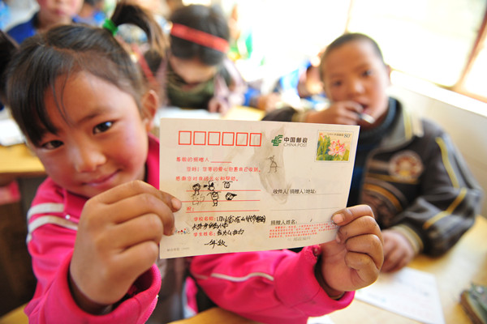
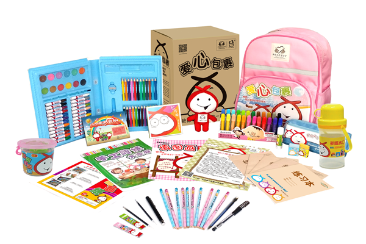
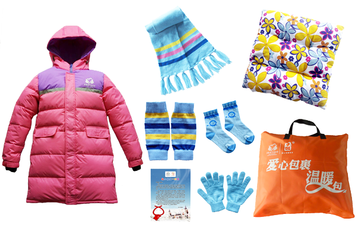

善行100介绍：善行100是中国扶贫基金会发起的大型志愿者倡导活动。“善行100”倡导大学生志愿服务100小时、商场提供场地100小时、公众捐赠善款100元。通过善行汇聚全社会爱的力量关爱贫困地区的孩子，倡导全民公益理念。同时,志愿者通过参与活动，增强面对挫折的抗打击能力，增强与陌生人沟通和表达的能力，增加对公益慈善和社会了解，增加领导力和团队组织能力等。
活动采用宣传筹款双挑战模式，按照地域经济水平不同划分高校支持数和筹款挑战目标，入选的高校公益社团在活动期间招募校内志愿者利用周末的时间在公益体验站开展宣传筹款挑战。参与高校需在规定时间内完成挑战宣传和筹款目标，并将所筹集善款全部捐赠爱心包裹，关爱及贫困地区小学生。中国扶贫基金会将提供培训、经费、物料等相关支持。
项目介绍
爱心包裹项目是在中国邮政集团公司的特别支持下，由中国扶贫基金会发起的一项全民公益活动。项目主要致力于改善贫困地区农村小学生综合发展和生活条件。通过组织爱心包裹捐购的形式，改善农村小学音体美教学现状和学习生活条件，给孩子们送去一对一的关爱，圆孩子们的童年梦想。
项目使命
搭建透明、便捷的捐赠平台，关爱弱势群体，推动全民公益，促进社会和谐。
项目愿景
将爱心包裹项目打造成家喻户晓的公益品牌，成为社会公众最愿意、最值得参与的公益项目。
受益对象
贫困地区农村小学学生；
当重大灾害发生时，将灾民小学生纳入受益范围。
项目特点
捐款使用透明：通过一对一的捐助模式，捐赠人在捐款后获得受益人名单，知道自己的钱帮助了谁，标准的包裹内容让捐赠人知道自己的钱发挥了什么作用；
参与便捷：全国3.6万个邮政网点均可办理捐购，也可以通过网上捐购等其他便捷渠道参与；
参与门槛低：学生型美术捐购标准为每个100元，其中92元为包裹的采购费用及包裹、回音卡、捐赠票据（挂号信）的邮寄费用，8元为项目执行与推广费用；学生型温暖包捐购标准为每个200元，其中184元为包裹的采购费用及包裹、回音卡、捐赠票据（挂号信）的邮寄等费用，16元为项目执行与推广费用；
体验性强：捐赠人能选择受益对象的年级、性别和地区；可获得中国扶贫基金会的感谢信、捐赠票据，收到受益人填写的回音卡，感受到参与公益的成就感与自豪。

包裹类型
1、学生型美术包
学生型美术包以基础文具和美术用品为主，每名学生一个美术包，美术包具有以下特点：
种类齐全：美术包产品分3大类，28个品种，共计144件单品，不但补充了学生基础文具不足,而且填补了学生开展美术及手工课用具方面的空白。
实用性强：美术产品组合能有效地启发学生的想象力和动手能力，文具包产品还能传递自然科学、健康卫生等知识。

2、学生型温暖包
学生型温暖包以保暖御寒物品为主，每名学生1个温暖包，温暖包具有以下特点：
种类丰富：产品分8个品种，能有效解决贫寒地区学生过冬物资不充足的问题；
实用性强：不仅为学生提供羽绒服、围巾、手套、袜子在内的常用保暖御寒物品，还特别针对学生上课时下半身易受寒的问题，加入护膝和坐垫，让孩子们开心温暖地度过这个冬天。
